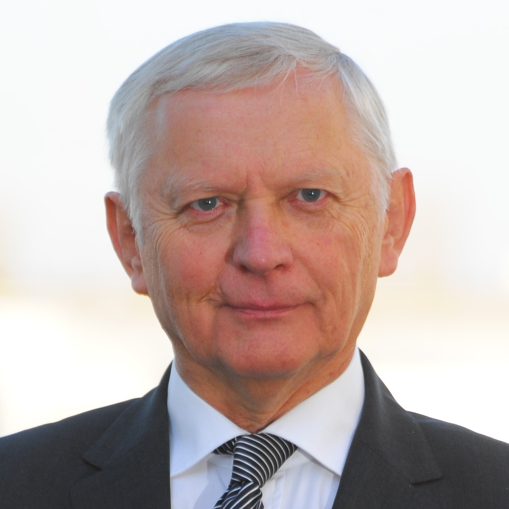
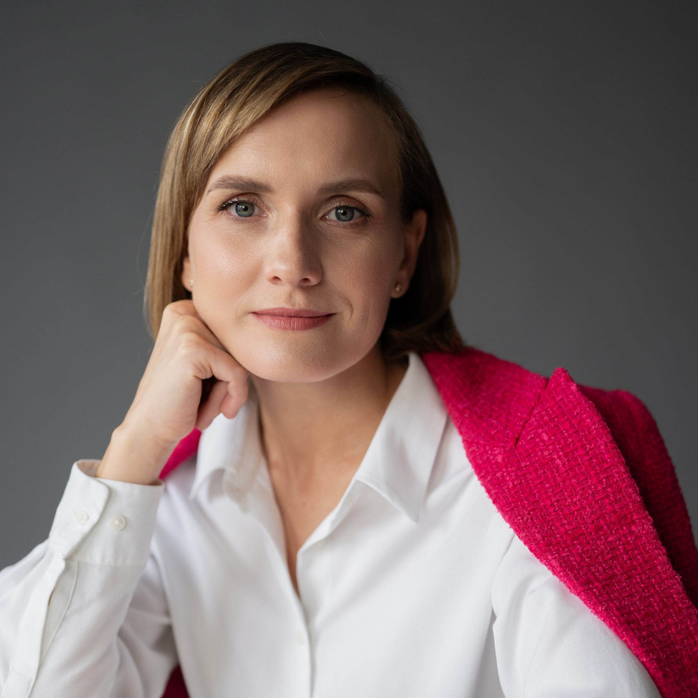
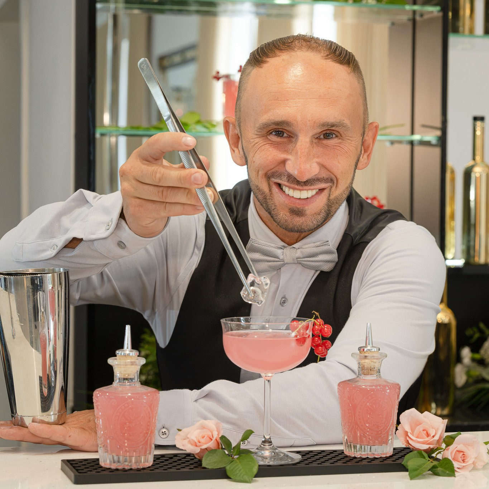
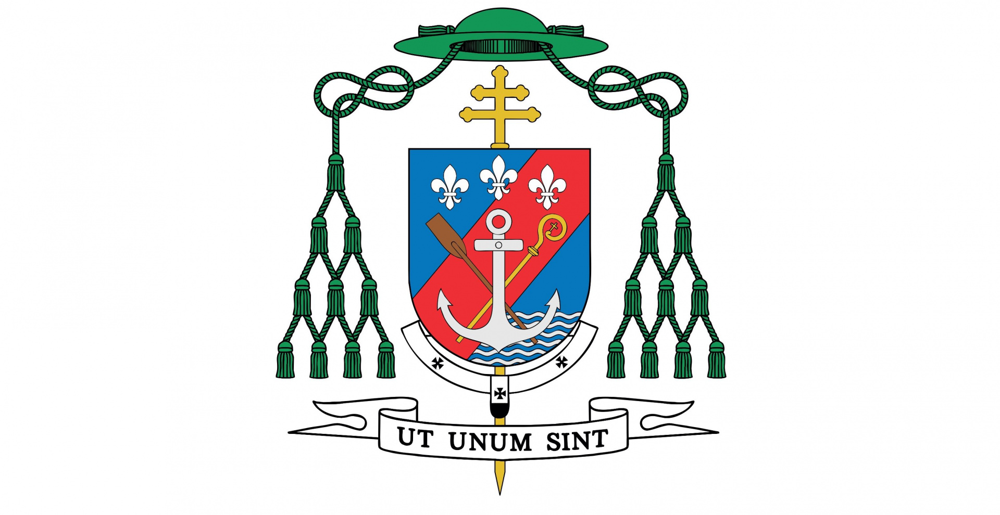
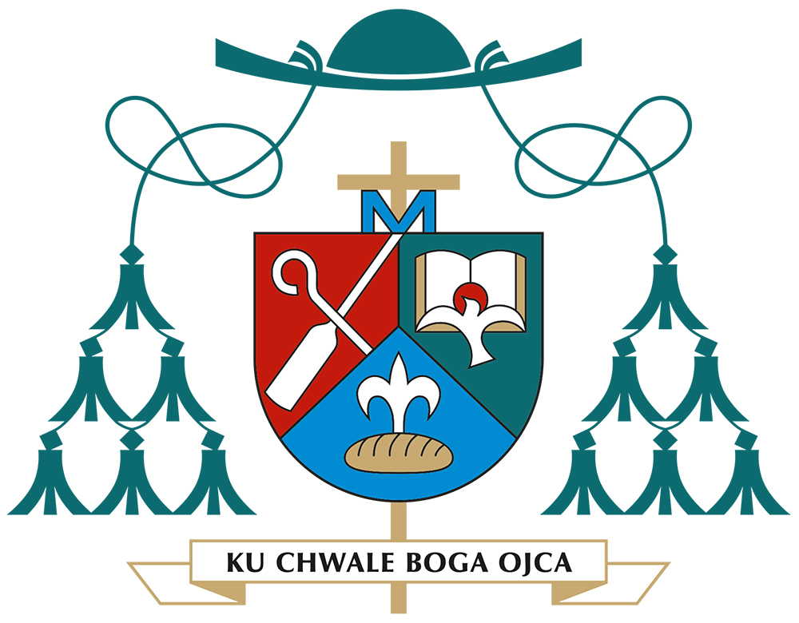
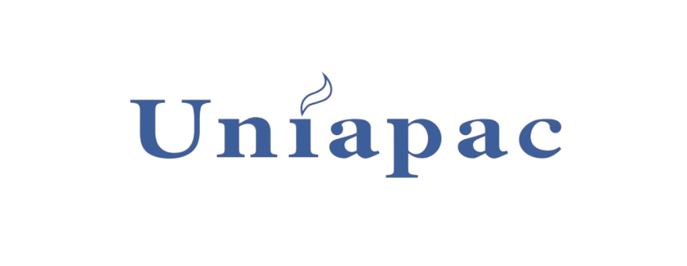
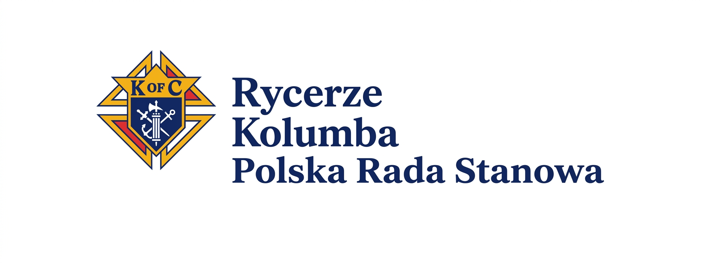
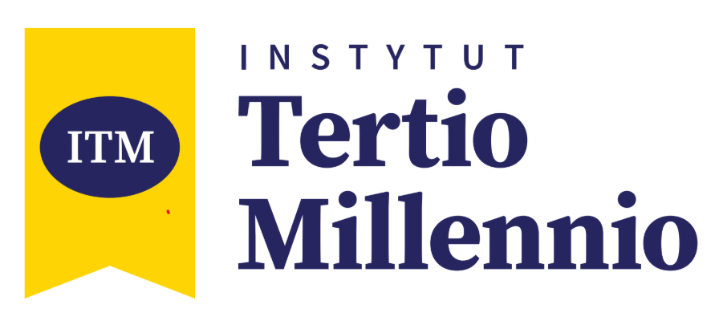
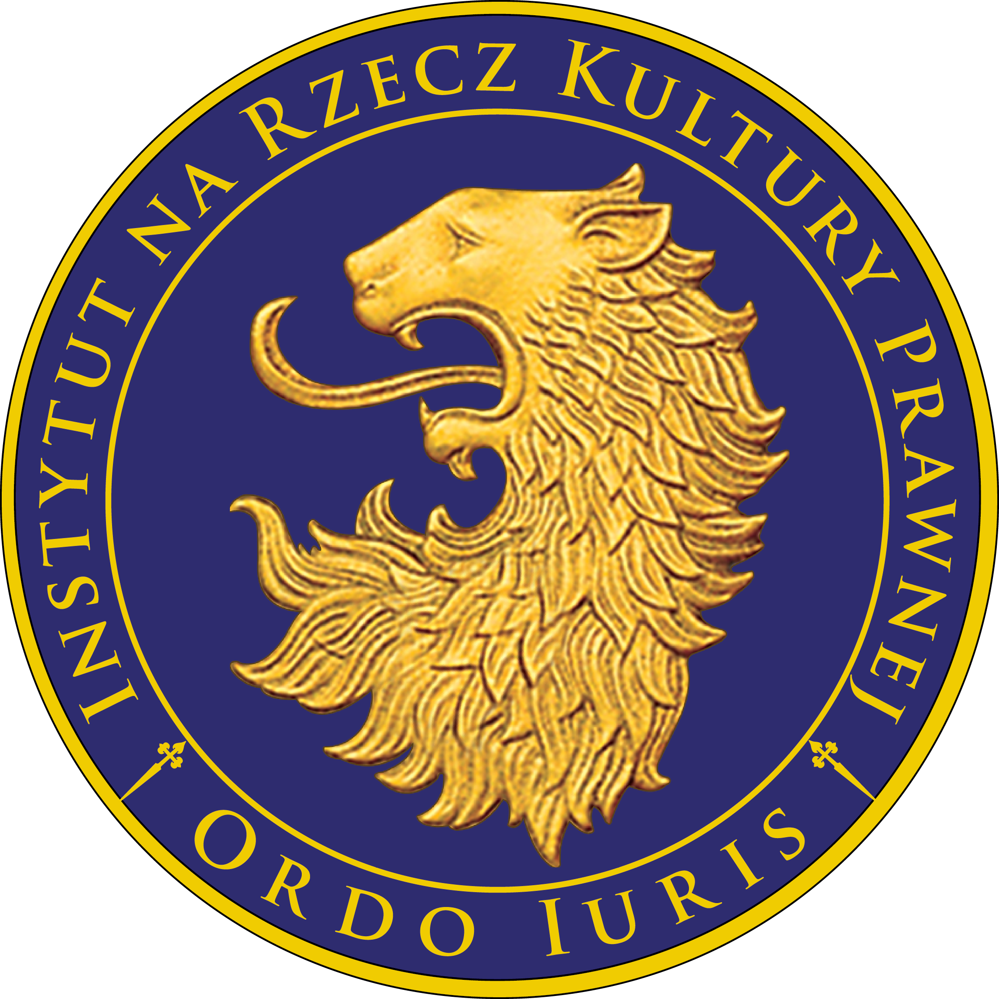

08:00
MSZA ŚWIĘTA
Eucharystia pod przewodnictwem księdza biskupa Grzegorza Olszowskiego w kościele pw. św. Michała Archanioła.
Miejsce: ul. Stolarska 7, Poznań
Eucharystia pod przewodnictwem księdza biskupa Grzegorza Olszowskiego w kościele pw. św. Michała Archanioła.
Miejsce: ul. Stolarska 7, Poznań
Odbiór identyfikatorów i materiałów konferencyjnych.
Miejsce: World Trade Center, Poznań
ks. Rafał Ostrowski – duszpasterz przedsiębiorców w Archidiecezji Poznańskiej i koordynator konferencji
Wojciech Nowicki – przedsiębiorca, pomaga firmom rozwijać liderów i zarządzać kapitałem

Krzysztof Janowski
Krzysztof Janowski jest przewodnikiem
rozwoju wewnętrznego ludzi sukcesu, autorem, mentorem i
przedsiębiorcą. Jest twórcą idei
„Od sukcesu do sensu”. Od ponad 15 lat
prowadzi działalność biznesową, szkoleniową i
mentoringową, pracując z przedsiębiorcami, właścicielami
firm, liderami, osobami publicznymi oraz ludźmi, którzy
osiągnęli zawodowy sukces, ale poszukują głębszego
sensu, wewnętrznego spokoju i większej jakości życia.
Z wykształcenia związany jest z finansami i
rachunkowością. Swoją pierwszą działalność gospodarczą
rozpoczął jeszcze podczas studiów. Doświadczenie
zdobywane jako przedsiębiorca połączył z logoterapią,
mentoringiem oraz pracą nad rozwojem wewnętrznym
człowieka. W swojej działalności koncentruje się na
zagadnieniach
sensu, wartości, odpowiedzialności, relacji,
duchowości oraz wpływu kondycji wewnętrznej lidera na
sposób, w jaki prowadzi on firmę i buduje swoje
życie.
Jest autorem książki „Poza szczytem – od sukcesu do
sensu. Droga do wewnętrznej pełni, spokoju i
spełnienia”. Prowadzi autorskie procesy mentoringowe,
seminaria i wystąpienia poświęcone przechodzeniu od
zewnętrznie rozumianego sukcesu do życia opartego na
sensie, obecności i wewnętrznej spójności.
Jest współtwórcą
Inner Harmony Mentoring Space –
kameralnej przestrzeni rozwoju wewnętrznego dla
przedsiębiorców i liderów, stworzonej wspólnie z Jackiem
Walkiewiczem i Jarkiem Tadlą. Projekt powstał jako
alternatywa dla tradycyjnych klubów biznesowych i
powierzchownego networkingu. Jego fundamentem są szczere
rozmowy o odpowiedzialności, samotności lidera,
relacjach, sensie, wartościach i jakości życia.
Jest również twórcą i prowadzącym autorskie formaty
medialne. Współprowadzi podcast
„W Dobrym Świetle”, w którym rozmawia z
przedsiębiorcami, twórcami i ekspertami o życiu,
wartościach, rozwoju oraz doświadczeniach stojących za
zawodowymi osiągnięciami. Prowadził także autorską serię
rozmów w Telewizji Biznesowej.
W swojej pracy
wykorzystuje doświadczenie biznesowe, logoterapię oraz
autorską metodykę opartą m.in. na
sensie, wdzięczności, empatii, akceptacji,
przebaczeniu, odpuszczeniu i obecności. Szczególnie interesuje go moment, w którym człowiek
osiąga kolejny zawodowy szczyt i odkrywa, że sukces nie
odpowiada już na najważniejsze pytania dotyczące życia,
relacji i osobistego spełnienia.
Pochodzi z
Podkarpacia, mieszka i pracuje w Warszawie. Prywatnie
jest mężem i ojcem czterech córek. Rodzina i relacje są
dla niego nie tylko ważną częścią życia, ale również
źródłem refleksji nad przywództwem, odpowiedzialnością i
obecnością. Interesuje się duchowością, psychologią
sensu, golfem i podróżami.
„Jakość biznesu nigdy nie będzie większa niż jakość
człowieka, który nim kieruje”.
Najważniejsze przesłanie jego pracy: sukces nie musi być końcem drogi. Może stać się
początkiem najważniejszej podróży – od osiągnięć,
pozycji i nieustannego działania do
sensu, wewnętrznego spokoju, bliskości i świadomego
życia.
Krzysztof Janowski
Doradca i przewodnik rozwoju wewnętrznego. Wspiera liderów w rozwoju osobistym, pomagając im odzyskać większą klarowność, równowagę i poczucie kierunku, budować wartościowe relacje oraz działać w zgodzie ze swoimi wartościami.

Daniel Schachle
Daniel Earl Schachle – FICF (Fraternal
Insurance Counsellor Fellow), FSCP (Financial Services
Certified Professional), CLTC (Certified in Long-Term
Care), PGK (Past Grand Knight).
Jest amerykańskim doradcą finansowym i liderem związanym
z Knights of Columbus, gdzie od ponad 20 lat zajmuje się
ubezpieczeniami i planowaniem finansowym katolickich
rodzin. Obecnie jako General Agent odpowiada za
działalność organizacji w Tennessee i Kentucky oraz
kieruje zespołem 16 doradców, którzy wspierają ponad 22
000 rodzin.
W 2008 roku przejął agencję w Tennessee, która posiadała
wówczas 320 milionów dolarów ubezpieczeń na życie.
Dzięki rozwojowi zespołu i działalności agencji wartość
ubezpieczeń na życie zawartych za jej pośrednictwem
wzrosła do ponad 2 miliardów dolarów.
Specjalizuje się w planowaniu finansowym i
ubezpieczeniach, ale jego zainteresowania wykraczają
poza kwestie finansowe. Szczególnie ważne jest dla niego
wspieranie finansowego i duchowego dobra
rodzin.
Jest mężem Michelle, ojcem trzynaściorga dzieci i
dziadkiem jedenaściorga wnucząt. Swoją wiarę przeżywa
również poprzez zaangażowanie w życie Kościoła i
lokalnej społeczności. Przez trzy kadencje pełnił
funkcję przewodniczącego Parish Pastoral Council,
prowadzi szkolenia dla ministrantów w swojej parafii
oraz jest członkiem Catholic Business League w
Nashville. Jest członkiem zarządu National Association
of Fraternal Insurance Councilors, był założycielem i
członkiem zarządu Young Catholic Professionals –
Nashville, a także założycielem i pierwszym dowódcą
Civil Air Patrol w hrabstwie Dickson w stanie
Tennessee.
W swojej pracy szczególnie interesuje się tym,
jak wiara, rodzina i odpowiedzialność finansowa mogą
wzajemnie się wspierać.
Chętnie dzieli się również swoim doświadczeniem z
młodymi ojcami, których wspiera i mentoruje.
Poza działalnością zawodową lubi spędzać czas z rodziną,
wyjeżdżać na kemping, wspólnie z rodziną odmawiać
codzienny różaniec oraz dzielić się z nią radością
płynącą ze służby innym. Lubi gotować i grillować. Jest
również licencjonowanym pilotem i wykorzystuje latanie
zarówno w pracy, jak i podczas rodzinnych podróży.
Podczas konferencji wygłosi wystąpienie zatytułowane
Radical Trust in God (Radykalne zaufanie
Bogu). Podzieli się swoim doświadczeniem życia, wiary,
rodziny i pracy, pokazując, jak zaufanie Bogu może
wpływać na sposób, w jaki podejmujemy decyzje i patrzymy
na swoją przyszłość.
Jego główne przesłanie jest proste, ale wymagające: Bóg
ma plan.
Jego plan dla Twojego życia
JEST bezpieczną drogą. Wystąpienie
będzie tłumaczone z języka angielskiego.
[https://ourkofcinsurance.com/](https://ourkofcinsurance.com/)
Daniel Schachle
Doradca inwestycyjny związany z Knights of Columbus Asset Advisors. Pomaga klientom budować przyszłość finansową poprzez odpowiedzialne inwestowanie zgodne z wartościami i zasadami wiary katolickiej.
Czas na rozmowy, nawiązywanie kontaktów i wymianę doświadczeń.
Rodzina w firmie, firma w rodzinie
Rozmowa o tym, jak wartości, relacje i odpowiedzialność kształtują sposób prowadzenia biznesu. Panel poświęcony budowaniu organizacji opartych na zaufaniu, szacunku do człowieka i długofalowym myśleniu – zarówno w przedsiębiorstwach rodzinnych, jak i firmach, które tworzą swoją kulturę bez udziału członków rodzin w strukturach organizacji.

Jerzy Kołodziej
Jerzy Kołodziej - konsultant, coach i
trener biznesowy z ponad 40-letnim doświadczeniem w
zarządzaniu, prowadzeniu projektów oraz negocjacjach
biznesowych. Pracował zarówno w międzynarodowych
korporacjach, m.in. IBM i AVNET, jak i w mniejszych
organizacjach, zarządzając biznesem, budując zespoły i
realizując projekty o międzynarodowej skali.
Od wielu lat wspiera właścicieli firm i kadrę
menedżerską w rozwijaniu ich potencjału, budowaniu
skutecznych zespołów, tworzeniu strategii oraz
realizacji złożonych przedsięwzięć. Prowadzi executive
coaching dla wyższej kadry zarządzającej, wykorzystując
w pracy wieloletnie doświadczenie biznesowe i znajomość
realiów środowiska korporacyjnego.
Ma bogate doświadczenie w negocjacjach międzykulturowych
– prowadził negocjacje biznesowe w ponad 30 krajach.
Specjalizuje się również w budowaniu zespołów, tworzeniu
strategii i modeli biznesowych, zarządzaniu dużymi
projektami oraz komunikacji interpersonalnej i
międzykulturowej. Jest certyfikowanym trenerem Insights
Discovery.
Przez 20 lat był związany z firmą BPD, gdzie pełnił
m.in. funkcję Partnera i Członka Zarządu, a od 2005 roku
pracuje jako coach, trener i konsultant biznesowy.
Wcześniej zajmował stanowiska menedżerskie w IBM Polska
i AVNET oraz pełnił funkcję interim managera i członka
rady nadzorczej. Jest również wykładowcą akademickim –
współpracował m.in. z AGH, KSB UEK w Krakowie oraz
Uniwersytetem WSB MERITO.
W swojej pracy łączy doświadczenie menedżera,
konsultanta i coacha z przekonaniem, że rolą dobrego
doradcy jest przede wszystkim pomóc drugiej osobie
odkryć i wykorzystać jej naturalny potencjał. Jego
doświadczenie zostało docenione m.in. nagrodami IBM EMEA
oraz wyróżnieniami za realizację kluczowych projektów
biznesowych.
Szczególnie bliski jest mu cytat: (...) pytanie nie może
już brzmieć: „Czego mam jeszcze oczekiwać od życia?”
lecz (...) raczej: „Czego życie oczekuje ode mnie?”
(Viktor E. Frankl, „O sensie życia”)
Jerzy Kołodziej
Konsultant, coach i trener biznesowy z ponad 40-letnim doświadczeniem w zarządzaniu i biznesie międzynarodowym. Specjalizuje się w executive coachingu, budowaniu zespołów, strategii i negocjacjach międzykulturowych.

Justyna Marks
Justyna Marks – Dyrektor Personalny w
Getinge, międzynarodowej firmie z sektora medycznego. Ma
ponad 15 lat doświadczenia w HR, konsultingu,
zarządzaniu zespołami oraz rozwoju ludzi i organizacji.
Współtworzyła od podstaw zespół polskiej filii
międzynarodowej firmy produkcyjnej, który dziś liczy
ponad 300 osób.
Od ponad 7 lat specjalizuje się w projektowaniu,
wdrażaniu i rozwijaniu programów mentoringowych.
Realizowała kompleksowe programy rozwojowe obejmujące
nawet 400 uczestników, wspierając organizacje na
wszystkich etapach – od diagnozy potrzeb i projektowania
procesu, przez przygotowanie mentorów i mentees, po
komunikację, monitoring i ewaluację rezultatów. Tworzyła
również międzynarodowe programy rozwojowe dla talentów,
liderów sprzedaży i sukcesorów.
Jest Prezesem Stowarzyszenia Centrum Mentoringu oraz
stowarzyszonym Członkiem Zarządu International Mentoring
Association w USA. Posiada międzynarodowe akredytacje
EMCC Senior Practitioner w zakresie zarządzania
programami mentoringowymi oraz EMCC Mentor Practitioner.
Kompetencje w obszarze mentoringu, team coachingu i
zarządzania programami mentoringowymi rozwijała m.in. w
Clutterbuck Coaching & Mentoring International oraz Art
of Mentoring w Australii.
Jest autorką i współautorką polskich oraz
międzynarodowych publikacji dotyczących mentoringu,
sukcesji i rozwoju organizacji. Jej rozdziały ukazały
się m.in. w książkach „Mentoring in Action: A Guide to
Success” wydanej przez Routledge oraz „O Poder do
Mentoring” wydanej przez EMCC Portugal. Regularnie
publikuje również na łamach „Personelu i Zarządzania”.
Jest współautorką ogólnopolskiego programu
mentoringowego Wings oraz inicjatywy Mentoring for
Cause.
Jako ekspertka i prelegentka dzieli się doświadczeniem w
obszarach mentoringu organizacyjnego i
międzypokoleniowego, sukcesji, budowania kultury
feedbacku oraz rozwoju talentów. Jest certyfikowaną
konsultantką Extended DISC, coachem talentów Gallupa
(CliftonStrengths) oraz akredytowaną konsultantką
Facet5.
Prywatnie – żona i mama.
Justyna Marks
Dyrektor personalna, ekspertka w obszarze mentoringu i rozwoju talentów, a także prezeska Stowarzyszenia Centrum Mentoringu – łączy doświadczenie biznesowe z głębokim przekonaniem, że najlepsze programy rozwojowe zaczynają się od dobrej relacji i uważnego słuchania.
Kameralna sesja poświęcona roli rodziny, relacji i wartości w życiu przedsiębiorcy. Przestrzeń do refleksji nad tym, jak osobiste relacje wpływają na przywództwo, podejmowanie decyzji i sposób budowania firmy.
Sesja poświęcona temu, jak przedsiębiorczość zakorzeniona w hojności może służyć dobru wspólnemu i tworzyć pozytywny wpływ społeczny. Rozmowa o tym, jak biznes może wykraczać poza rozwój firmy i stawać się przestrzenią odpowiedzialności, służby oraz wartościowego wkładu w życie społeczne.

Sigrid Marz
Sigrid Jans Marz od 2024 roku pełni
funkcję Prezes UNIAPAC. Objęła tę
funkcję po wcześniejszym pełnieniu funkcji Prezes
UNIAPAC Europe. Wcześniej zajmowała również kilka
stanowisk w zarządach w Belgii, Europie oraz w Fundacji
UNIAPAC.
Sigrid poświęciła swoją karierę zawodową doradztwu w
zakresie zarządzania, rekrutacji i coachingowi. Po
rozpoczęciu kariery w doradztwie strategicznym rozwijała
swoje kompetencje w zakresie sztuki zadawania pytań i
zarządzania relacjami z kadrą najwyższego szczebla,
pracując jako
Partner w dwóch globalnych firmach zajmujących się
executive search.
W trakcie tych lat pracy zawodowej Sigrid rozwinęła
głębokie zainteresowanie człowiekiem w sytuacjach,
gdy staje on wobec trudnych decyzji, wyzwań i
odpowiedzialności. Chcąc zgłębić to zainteresowanie aż do jego korzeni,
które tkwią w zachodnich tradycjach filozoficznych i
duchowych, zrobiła sobie przerwę w karierze zawodowej,
aby studiować filozofię i teologię, a następnie uzyskała
certyfikat coacha.
Sigrid głęboko wierzy w
integralny rozwój człowieka poprzez pracę
i chce przyczyniać się do postrzegania
biznesu jako szlachetnego powołania.
Pragnie wspierać zmiany strukturalne i procesowe
prowadzące w kierunku innowacyjnej i inkluzywnej
gospodarki, która chce tworzyć dobre bogactwo poprzez
dobre produkty i dobrą pracę — dla wszystkich.
Wierzy w gospodarkę, w której wiodące firmy zmieniają
się tak, aby oblicze odnoszącego sukcesy biznesu stało
się naprawdę bardziej ludzkie i zrównoważone — dla
nas, naszej planety oraz przyszłych pokoleń.
Jest trójjęzyczna i prowadzi
działalność biznesową w języku angielskim, francuskim i
niemieckim.
Jest żoną Jeana-Françoisa Jansa, belgijskiego artysty.
Wspólnie interesują się fotografią, lubią wędrówki i
ogrodnictwo, a także dzielą zainteresowanie włoską
kulturą i językiem.
Sigrid Marz
Prezydent UNIAPAC - międzynarodowej organizacji zrzeszającej przedsiębiorców kierujących się wartościami chrześcijańskimi. Wspiera rozwój idei odpowiedzialnego biznesu i przedsiębiorczości służącej dobru wspólnemu.

ks. prof. Arkadiusz Wuwer
ks. dr hab. Arkadiusz Wuwer, prof. UŚ –
górnoślązak, prezbiter archidiecezji katowickiej, doktor
nauk humanistycznych w zakresie socjologii (Papieski
Uniwersytet św. Tomasza z Akwinu „Angelicum” w Rzymie),
doktor habilitowany nauk teologicznych w zakresie
katolickiej nauki społecznej. Od 2001 roku pracownik badawczo-dydaktyczny Wydziału
Teologicznego Uniwersytetu Śląskiego w Katowicach,
obecnie w Instytucie Nauk Teologicznych; senator UŚ. Od
2009 roku
przewodniczący ogólnopolskiej Sekcji Wykładowców
Katolickiej Nauki Społecznej. Członek jury międzynarodowej nagrody „Economy and
Society” Fundacji Centesimus Annus Pro Pontifice
(Watykan) i ekspert projektu „Catholic Social Thought in
Central and Eastern Europe” (Rzym). Autor, współautor i
redaktor 18 monografii naukowych, m.in. o zasadzie
pomocniczości (subsydiarności). Bada etyczne podstawy
życia gospodarczego, pracę i przedsiębiorczość w
perspektywie nauczania społecznego Kościoła oraz
tradycję katolicyzmu społecznego na Górnym Śląsku.
Wielokrotnie prowadził rekolekcje i dni skupienia dla
przedsiębiorców i pracodawców.
Inicjator, a
następnie sekretarz i rzecznik Rady Społecznej przy
Arcybiskupie Metropolicie Katowickim – gremium
doradczego złożonego z przedsiębiorców, samorządowców,
naukowców i dziennikarzy; współautor jej dokumentów o
przyszłości Górnego Śląska oraz dokumentów społecznych
Episkopatu Polski. Przewodniczący Komisji do spraw
społecznych II Synodu Archidiecezji Katowickiej.
Organizator dorocznych Piekarskich Sympozjów
Społecznych, poprzedzających pielgrzymkę mężczyzn do
sanktuarium Matki Sprawiedliwości i Miłości Społecznej.
Redaktor pięciu tomów nauczania społecznego biskupów
katowickich. Jako archidiecezjalny asystent Akcji
Katolickiej współtwórca i koordynator parafialnych
Klubów Pomocy Koleżeńskiej „Praca” – odpowiedzi na
bezrobocie po restrukturyzacji górnośląskiego przemysłu.
Kapelan Związku Górnośląskiego.
Rzecznik prasowy Kurii Metropolitalnej w Katowicach i
Arcybiskupa Metropolity Górnośląskiego, duszpasterz
dziennikarzy; od 2005 roku autor audycji w Radiu
Katowice, komentator transmisji telewizyjnych, autor
kilkuset tekstów w prasie ogólnopolskiej i regionalnej.
Wykładowca i panelista ogólnopolskiego Festiwalu
Katolickiej Nauki Społecznej; wykłada także poza
uniwersytetem – dla środowisk zawodowych, młodzieży i
uniwersytetów trzeciego wieku. Promotor czterech
doktoratów i ponad 180 prac magisterskich. Wykłada po
polsku i po włosku, tłumaczy z języka włoskiego i
francuskiego. W czasie wolnym zajmuje się ornitologią i
fotografiką.
Szczególnie bliskie jest mu
zdanie:
„Historia zbawienia nie dzieje się obok historii
ludzi — przenika ją całą. Dlatego przestrzeń społeczna
jest nie tylko miejscem socjologicznym; jest także
miejscem teologicznym”
(Mario Toso).
W części poświęconej hojności będzie
mówił o tym,
gdzie hojność się zaczyna, co ją po cichu wypacza i
dlaczego bez niej człowiek nie może się
spełnić.
ks. prof. Arkadiusz Wuwer
Teolog, wykładowca Uniwersytetu Śląskiego w Katowicach, specjalista w zakresie katolickiej nauki społecznej. Podejmuje refleksję nad rolą wartości chrześcijańskich, odpowiedzialności społecznej oraz miejscem przedsiębiorcy w budowaniu dobra wspólnego.
Czas na rozmowy, nawiązywanie kontaktów i wymianę doświadczeń.
Krótkie wystąpienia przedsiębiorców prezentujących swoje firmy, inicjatywy i podejście do budowania biznesu opartego na wartościach, odpowiedzialności i zaangażowaniu.
Rozmowa o tym, jak przedsiębiorcy poprzez odpowiedzialność, hojność i zaangażowanie społeczne mogą wywierać pozytywny wpływ na swoje otoczenie oraz przyczyniać się do budowania dobra wspólnego.

Robert Bartkowiak
Prowadzący
Robert Bartkowiak jest
biegłym rewidentem, biegłym ds. zapobiegania i
wykrywania przestępstw gospodarczych i korupcji,
biegłym sądowym oraz audytorem wewnętrznym. Jest absolwentem Uniwersytetu Ekonomicznego w
Poznaniu, gdzie ukończył Wydział Zarządzania ze
specjalnością „Finanse i rachunkowość
przedsiębiorstwa”.
Posiada 26-letnie doświadczenie zawodowe. Obecnie pełni
funkcję
Prezesa Zarządu Firmy Audytorskiej AVEM AUDYT sp. z
o.o.
Zajmuje się doradztwem podatkowym, gospodarczym,
bilansowym i prawnym, a także analizami, ekspertyzami i
wycenami przedsiębiorstw, udziałów i akcji.
W
swojej pracy zawodowej zajmuje się również procesami
łączenia, podziału, przekształcania i likwidacji spółek,
opiniowaniem efektywności działalności i
odpowiedzialności podmiotów (np. z tyt. niewypłacalności
lub zagrożenia upadłością) oraz identyfikacją nadużyć i
przestępstw gospodarczych. Prowadzi także szkolenia z
zakresu rachunkowości, prawa, finansów i podatków.
Pełnił funkcje głównego księgowego, dyrektora
finansowego, dyrektora działu prawnego oraz prokurenta
samoistnego, przewodniczącego „komitetu audytu i
kontroli wewnętrznej” w ramach ładu korporacyjnego,
sekretarza rad nadzorczych i zarządów spółek prawa
handlowego z kapitałem polskim i zagranicznym. Jest
biegłym sądowym przy Sądzie Okręgowym w
Poznaniu
(III kadencja 5-letnia – do dnia 31.12.2030).
Jest
katolikiem wyznania rzymskokatolickiego, mężem Anny i
ojcem syna Józefa. Jest również autorem bajek dla
dzieci.
Poza działalnością zawodową jego pasją
jest sport. Uprawia tenis ziemny, bieganie i pływanie.
Jest instruktorem WOPR oraz instruktorem sportu w
pływaniu.
Podczas konferencji
poprowadzi panel dyskusyjny dotyczący hojności
przedsiębiorcy.
Robert Bartkowiak
Prowadzący
Biegły rewident, prezes zarządu Avem Audyt sp. z o.o., biegły sądowy.

Krzysztof Zuba
Uczestnik
Krzysztof Zuba jest
przedsiębiorcą, trenerem biznesu i menedżerem
z ponad 20-letnim doświadczeniem na stanowiskach
zarządczych w firmach usługowych i produkcyjnych oraz
organizacjach pozarządowych. Jest absolwentem Wydziału
Zarządzania Akademii Górniczo-Hutniczej oraz studiów
MBA.
W swojej karierze zawodowej zajmował się m.in.
zarządzaniem i negocjacjami. Prowadził negocjacje
zakończone zawarciem umowy o wartości
kilkunastu miliardów złotych, a także
pozyskiwał finansowanie ze środków Unii Europejskiej w
ramach programu ASAP.
Jego działalność wykracza
jednak poza świat biznesu. Jest doradcą życia rodzinnego
oraz autorem warsztatów dla narzeczonych i małżonków. Od
wielu lat współpracuje z Fundacją „Rodzice Szkole” oraz
angażuje się w projekty związane z tematyką
religijną.
Przez cztery kadencje pełnił funkcję
Delegata Stanowego Rycerzy Kolumba w Polsce. Jest pomysłodawcą programu
„Życie Mam”, a także członkiem Zarządu
Europejskiej Federacji dla Życia i Godności Człowieka
„ONE OF US”.
W swojej działalności łączy
doświadczenie przedsiębiorcy i menedżera z
troską o rodzinę, życie i godność człowieka.
Krzysztof Zuba
Uczestnik
Jeden z liderów Rycerzy Kolumba w Polsce, zaangażowany w rozwój wspólnoty oraz działalność opartą na wartościach, służbie i odpowiedzialności społecznej.

ks. Tomasz Kancelarczyk
Uczestnik
Ks. Tomasz Kancelarczyk jest
kapłanem archidiecezji
szczecińsko-kamieńskiej. Od najmłodszych lat miał w sobie silne poczucie
odpowiedzialności za rodzinę. Po ukończeniu szkoły
podstawowej i technikum rolniczego rozpoczął pracę
zawodową. Ze względu na konieczność łączenia nauki z
pracą zrezygnował z rozpoczętych studiów.
Odbył służbę wojskową, która stała się dla niego czasem
hartowania charakteru i ducha. Po przejściu do rezerwy
przez długi czas dojrzewała w nim decyzja o wstąpieniu
do seminarium. Ostatecznie ukończył Arcybiskupie Wyższe
Seminarium Duchowne w Szczecinie i został kapłanem.
Na drodze kapłańskiej spotkał wielu niezwykłych
ludzi, szczególne miejsce w jego życiu zajęły osoby z
niepełnosprawnościami – spotkanie z nimi miało wpływ na
jego dalszą posługę i zaangażowanie na rzecz ochrony
życia.
Od wielu lat aktywnie działa na rzecz
obrony życia, jest współorganizatorem szczecińskiego
Marszu dla Życia, w 2012 roku
założył Fundację Małych Stópek.
Jest
propagatorem duchowej adopcji dziecka
poczętego.
Jak sam podkreśla,
droga obrony życia nie jest łatwa, ale choćby dla
jednego uratowanego istnienia warto nią
podążać.
W 2021 roku wraz z Małgorzatą Terlikowską
opublikował wywiad-rzekę „Chodzi mi o życie. Choćbyśmy
uratowali jedno życie – warto”.
https://fundacjamalychstopek.pl/
ks. Tomasz Kancelarczyk
Uczestnik
Prezes Fundacji Małych Stópek, zaangażowany w działania na rzecz ochrony życia oraz wsparcie kobiet i rodzin.

Krzysztof Drabik
Uczestnik
Krzysztof Drabik –
zwycięzca programu telewizyjnego Mam Talent za
najlepsze show, wielokrotny rekordzista świata i zawodowy barman
Flair z 25-letnim doświadczeniem. W swojej karierze
wykonał ponad 2000 pokazów barmańskich podczas różnych
wydarzeń.
Jego największą pasją jest wykorzystywanie własnych
talentów i sportowych wyzwań do pomagania innym; jest
członkiem Rady Fundacji Help Furaha,
która działa w Kenii, budując największe w Afryce
centrum rehabilitacyjne dla dzieci chorych i
odrzuconych. W ciągu 10 lat działalności Fundacja objęła
pomocą ponad 1100 podopiecznych.
Wielokrotnie ustanawiał rekordy świata w najdłuższych i
najwyższych żonglerkach, nadając swoim wyzwaniom
charytatywny cel. Dwukrotnie ustanowił rekord
najdłuższej żonglerki na świecie, pokonując żonglując po
piasku około 500-kilometrową trasę wzdłuż Bałtyku – ze
Świnoujścia do Gdańska. Rok później poprawił swój wynik,
pokonując tę samą trasę w biegu z żonglowaniem w ciągu
10 dni.
Do jego niezwykłych osiągnięć należą również wejście
żonglując po schodach na 10 najwyższych budynków w
Warszawie w ciągu 10 godzin, przebiegnięcie żonglując
Korony Polskich Maratonów oraz zdobycie żonglując
najwyższej góry Afryki – Kilimandżaro (5895 m n.p.m.) –
w ciągu 5 dni, pokonując cały szlak.
Obecnie
przygotowuje się do kolejnego wyjątkowego wyzwania –
wejścia żonglując po schodach na najwyższy budynek
świata.
Jak podkreśla, sam rekord nie ma dla niego
większego znaczenia. Jest przede wszystkim narzędziem,
które przyciąga uwagę do akcji charytatywnej. Liczy się
cel, który jest ważniejszy od samego osiągnięcia.
Głęboko wierzy, że każdy człowiek otrzymuje w życiu
wiele talentów, ale jego zadaniem jest je odnaleźć,
rozwijać i wykorzystywać w zgodzie z samym sobą. Wierzy,
że podążanie drogą prawdy, miłości i służby drugiemu
człowiekowi może prowadzić do rzeczy, które wydają się
niemożliwe.
Jego życiowe motto brzmi:
„Bóg rozmawia z nami w ciszy, słuchaj Jego planu, nie
swojego, bo Jego plan przewyższa wszystkie
Twoje…”
oraz:
„Nie ważne, ile masz, ale jak bardzo jesteś w stanie
poświęcić się dla drugiego człowieka”.
Ważne miejsce w jego życiu zajmuje wiara i
codzienna Msza Święta. Poza działalnością zawodową i
charytatywną jego pasjami są podróże, skoki
spadochronowe, wspinaczka wysokogórska i sporty
wodne.
Podczas konferencji Krzysztof Drabik będzie uczestnikiem
panelu dyskusyjnego, w którym podzieli się
doświadczeniami związanymi z pokonywaniem własnych
granic, odkrywaniem talentów, determinacją oraz
wykorzystywaniem własnych możliwości do pomagania innym.
Krzysztof Drabik
Uczestnik
Przedsiębiorca, który łączy ekstremalne wyzwania sportowe z działalnością charytatywną, wykorzystując swoje osiągnięcia do niesienia pomocy i inspirowania innych.
Sesja poświęcona roli hojności, odpowiedzialności i poczucia misji w przedsiębiorczości. Przestrzeń do refleksji i rozmowy o tym, jak biznes może stać się sposobem tworzenia trwałej wartości i pozytywnego wpływania na innych.
Miejsce: Sala Saffron, GARDENcity, Międzynarodowe Targi Poznańskie
ks. Mateusz Misiak
Eucharystia w Bazylice kolegiackiej Matki Bożej Nieustającej Pomocy, św. Marii Magdaleny i św. Stanisława Biskupa w Poznaniu – Fara Poznańska.
Miejsce: ul. Gołębia 1, Poznań
Szymon Tritt

ks. Francisco Mota SJ
Doradca duchowy UNIAPAC
Ojciec Francisco Mota SJ jest
portugalskim jezuitą, który od ponad
dwóch dekad zajmuje się
katolicką nauką społeczną oraz
zarządzaniem instytucjami kultury.
Jako dyrektor
kampusu
Uniwersytetu Katolickiego Mozambiku w Maputo, a następnie przewodniczący i dyrektor wykonawczy
Brotéria, odpowiadał za tworzenie,
planowanie strategiczne i bieżące zarządzanie obiema
instytucjami. Jego praca obejmowała również kierowanie
zespołami oraz współpracę z dużymi firmami i
przedsiębiorstwami w zakresie pozyskiwania funduszy.
W swojej pracy akademickiej i badawczej koncentrował się
przede wszystkim na kwestii moralnej dopuszczalności
użycia siły zbrojnej w kontekście wojny oraz na
poszukiwaniu etycznego podejścia do współczesnego życia,
opartego na tradycji katolickiej.
Mieszkał w
Portugalii, Mozambiku, Anglii, Stanach Zjednoczonych i
Meksyku. Posługuje się językiem portugalskim, angielskim,
hiszpańskim i francuskim.
Od 2025 roku pełni funkcję doradcy duchowego
UNIAPAC.
Podczas konferencji Ojciec Francisco Mota SJ
poprowadzi konferencję oraz warsztaty formacyjne. Będzie
to czas pogłębionej refleksji nad tym, jak
wiara i chrześcijańska wizja człowieka
mogą kształtować nasze życie, decyzje oraz sposób
funkcjonowania w świecie biznesu.
LinkedIn: https://www.linkedin.com/in/franciscomotasj/
Podcast in Brotéria:
https://www.youtube.com/watch?v=oOL6ygepwjU
ks. Francisco Mota SJ
Doradca duchowy UNIAPAC
Konferencja i warsztat formacyjny dla przedsiębiorców...
Miejsce: Kamea, ul. Klasztorna 17/18, Poznań
Wspólny obiad uczestników drugiego dnia konferencji.
Miejsce: Ostrów Tumski
Wybierz dzień, który chcesz przeżyć razem z nami.
Bilet jednodniowy daje Ci pełny dostęp do programu wybranego dnia konferencji. Możesz zdecydować, czy chcesz uczestniczyć w głównym dniu konferencyjnym 9 października, czy wybrać 10 października — dzień integracji, relacji i formacji.
Wybierz dzień:
Pełne doświadczenie konferencji — dwa dni inspiracji, relacji i formacji
Bilet dwudniowy daje Ci możliwość uczestniczenia w pełnym programie konferencji „Bóg, Rodzina, Firma, Hojność” — zarówno w części merytorycznej, jak i w dniu integracji, formacji i pogłębionej refleksji.
To propozycja dla osób, które chcą poświęcić dwa dni na rozwój, budowanie relacji z innymi przedsiębiorcami oraz spojrzenie na swoją rolę przedsiębiorcy w perspektywie wiary.
bilet nie obejmuje noclegu ani udziału w bankiecie
Pełny udział w konferencji oraz wieczornym bankiecie
Bilet Premium obejmuje pełny program dwóch dni konferencji „Bóg, Rodzina, Firma, Hojność”, udział w bankiecie oraz dodatkowe materiały dostępne w tym wariancie biletu.
To propozycja dla osób, które chcą w pełni uczestniczyć w konferencji, przedłużyć wspólny czas podczas bankietu oraz zachować ze sobą część treści i doświadczeń także po zakończeniu wydarzenia.
bilet nie obejmuje noclegu
Pełny udział w konferencji oraz możliwość prezentacji swojej firmy
Bilet Premium Plus obejmuje pełny program dwóch dni konferencji „Bóg, Rodzina, Firma, Hojność”, udział w bankiecie, dodatkowe materiały oraz możliwość zaprezentowania swojej firmy podczas konferencji.
To propozycja dla przedsiębiorców, którzy chcą nie tylko uczestniczyć w konferencji, ale również przedstawić swoją działalność, wartości i misję innym przedsiębiorcom oraz podzielić się tym, czym zajmują się na co dzień.
bilet nie obejmuje noclegu





